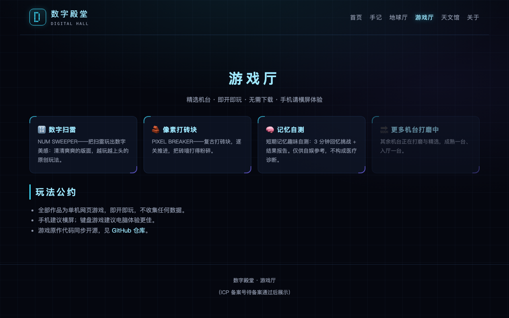
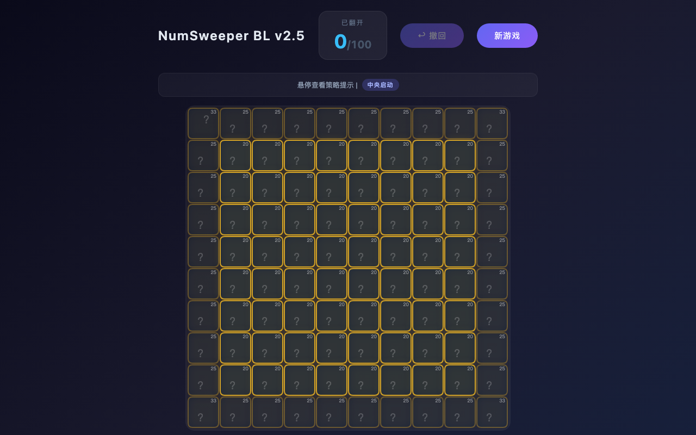

不踩雷，只算数——数字扫雷的创意与进化之路

劳伦斯实验室 · 游戏厅
扫雷，可能是世界上最经典的小游戏之一。但它有个老毛病：开局靠运气，死局靠猜。
我一直在想：能不能把"猜"去掉，让每一步都有据可依？
于是有了「数字扫雷」——把地雷换成 1-100 的数字，把"踩雷"换成"算数"。
一、创意：一条 250 的生死线
规则只有三条：
- 10×10 的网格里，藏着 1-100 不重复的 100 个数字
- 点击格子翻开它；如果"这个数字 + 相邻已翻开数字之和"超过 250，就爆炸
- 安全翻开全部 100 个格子，就是通关
于是扫雷变成了一道会爆炸的数学题：每一步都要估算"翻开它会不会过线"。运气让位给推理——这正是我想玩的游戏。
二、改进：四次关键进化

数字扫雷（NumSweeper BL v2.5）游戏画面
① 渲染从"卡"到"顺"。 初版用 DOM 网格，渲染要 15-25 毫秒；换成 Canvas 后只要 1-2 毫秒，再配合邻居预计算表、分帧模拟，手机上也流畅。
② 长出"策略引擎"。 内置三层策略：中央启动（中央格子邻居多、信息增益最大）、内圈推进、外圈收尾（边缘谨慎计算）。
③ 让策略"自证"。 做了一键对比：v2.5 策略 vs Border-Last 策略，批量模拟 100 局看谁活得更久。策略好不好，让模拟器说话。
④ 打磨手感。 悬停显示安全概率、污染度、推荐指数；必爆格标 ✕，最优格亮 ⭐；误触可撤回 10 步；通关后展示你避开的全部危险格；爆炸有烟花，翻开有音效——后来还升级成了晓晓女声的语音播报（TTS 预录音频，不联网也能响）。
三、AI 在这件事里的角色
从规则打磨、Canvas 性能方案、策略模拟的实现，到把配音变成 TTS 预录音频——AI 全程参与，很多"当时觉得难"的环节都是它帮着拆掉的。
四、思考一下：你的最优策略是什么？
爆炸的判据是：你点击的格子，加上它四周相邻的已翻开格子，总和超过 250 就触发地雷。最坏情况是相邻四格全都先翻开——那时"这个数 + 四个邻居"的总和，就是它的生死线。
这条规则藏着一个反直觉的推论：点击的先后次序，就是你最大的安全空间。一个高危数字（比如 90 多的大数挤在一起），等邻居全翻开再点它，必炸无疑；可如果它一上来就点——那时周围一个已翻开的格子都没有，总和只有它自己，反而安全。
反过来，也确实存在全局无解的可能：如果一片数字的布局，无论怎么排序都绕不开"邻居先翻开、高危数后点"的死结，这局从发牌起就没有安全路径。好在大部分局面有解，而解就藏在次序里：
- 高危数字先点。大数字翻得越晚，身边躺下的邻居越多，越危险——开局先扫一遍大数，尽早处理。
- 动手前先算一笔账。自己的数字 + 已翻开邻居的和，逼近 250 就不要点。
- 谨慎收尾。越到后期，格子周围已翻开的邻居越多、容错越小；前期清高危区，后期走低危区。
也就是说，数字扫雷的通关不靠运气，靠的是对点击次序的规划。下一局试试：开局先找大数，再决定先点谁。
五、来玩一局
我是站主，接下来，我会继续介绍本站编程作品的思路和经验，也会分享一些日常学习点滴。
← 返回手记列表